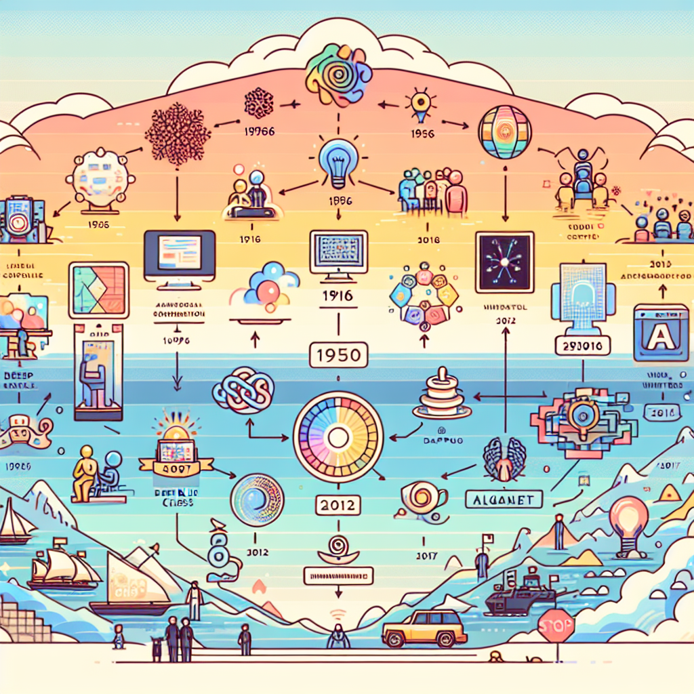
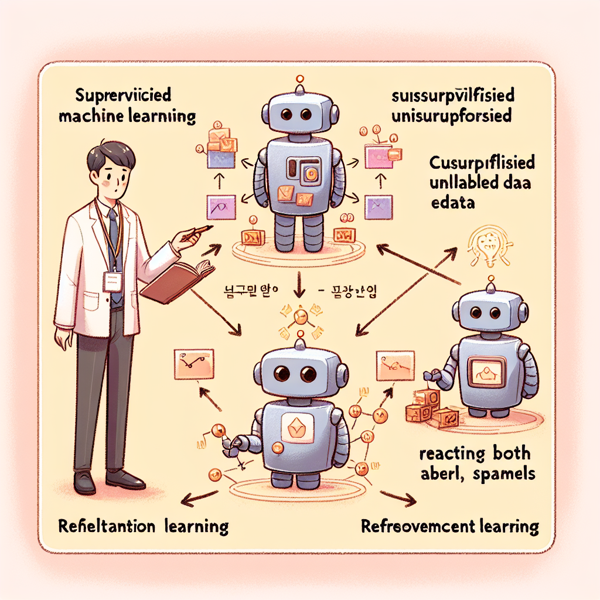

Chapter 3. AI 기본 원리와 머신러닝¶
🎯 학습 목표¶
이 챕터를 마치면 여러분은 다음을 할 수 있어요!
- 인공지능(AI)의 정의를 자신의 말로 설명할 수 있다.
- AI의 역사적 발전 과정을 주요 사건 중심으로 정리할 수 있다.
- 지도학습, 비지도학습, 강화학습의 개념과 차이를 구분할 수 있다.
- 실생활 속 AI 사례를 분석하여 어떤 학습 방식이 사용되었는지 판단할 수 있다.
📖 도입: AI가 나를 이미 알고 있다?¶
💬 잠깐, 이런 경험 있지 않나요?
유튜브에서 영상을 보다 보면 "어? 이거 딱 내 취향인데?" 싶은 영상이 자동으로 뜨고, 멜론이나 스포티파이에서는 내가 좋아할 것 같은 음악을 정확히 추천해주죠. 심지어 쇼핑몰에서는 내가 생각만 했던 물건이 광고로 나타나기도 하고요!
이 모든 일은 인공지능(AI) 이 여러분의 행동 데이터를 분석하고, 패턴을 학습했기 때문에 가능합니다. 그런데 정작 우리는 AI가 어떻게 이런 일을 해내는지 잘 모르는 경우가 많죠.
이 챕터에서는 AI가 어떻게 "배우는지"를 직접 탐구해볼 거예요. 복잡한 수식이나 코드보다는, 원리를 직접 경험하는 방식으로 배워볼게요. 준비됐나요? 😊
1부. 인공지능이란 무엇인가?¶
🤖 AI의 정의¶
인공지능(Artificial Intelligence, AI) 은 말 그대로 "인공적으로 만든 지능"이에요. 그런데 여기서 '지능'이란 뭘까요?
지능은 일반적으로 다음과 같은 능력을 포함해요:
- 새로운 상황에서 문제를 인식하는 능력
- 과거 경험을 바탕으로 학습하는 능력
- 주어진 정보를 분석해 판단하는 능력
- 목표를 달성하기 위해 계획을 세우는 능력
AI는 이러한 지능적 행동을 컴퓨터가 할 수 있도록 만든 기술이에요.
📌 쉽게 정리하면: AI = 컴퓨터가 사람처럼 생각하고, 배우고, 판단할 수 있도록 만든 기술
🕰️ AI의 역사: 어떻게 여기까지 왔을까?¶
AI는 하루아침에 만들어진 기술이 아니에요. 수십 년의 시행착오와 발전이 있었답니다.

| 연도 | 사건 | 의미 |
|---|---|---|
| 1950년 | 앨런 튜링이 '기계가 생각할 수 있는가?' 질문 제기, 튜링 테스트 제안 | AI 연구의 출발점 |
| 1956년 | 다트머스 회의에서 '인공지능(AI)' 용어 최초 사용 | AI 분야의 공식 탄생 |
| 1970~80년대 | AI 겨울(AI Winter): 기술 한계와 투자 감소로 침체기 | 기대와 현실의 간극 |
| 1997년 | IBM의 딥블루(Deep Blue), 체스 세계 챔피언 가리 카스파로프 격파 | 특정 분야에서 AI가 인간 초월 |
| 2012년 | 딥러닝 기술로 이미지 인식 정확도 대폭 향상 | 현대 AI 혁명의 시작 |
| 2016년 | 구글 알파고(AlphaGo), 이세돌 9단 4:1 승리 | 전 세계적 AI 관심 폭발 |
| 2022년~ | ChatGPT 등장, 생성형 AI 시대 개막 | AI가 일상 속으로 |
💡 알고 있었나요? AI 역사에는 두 번의 "AI 겨울"이 있었어요. 초기 과학자들이 "10년 안에 인간 수준의 AI를 만들겠다"고 했다가 기술적 한계에 부딪히면서 연구비가 끊기고 관심이 사라진 시기예요. 지금의 AI가 이렇게 발전할 수 있었던 건 컴퓨터 성능 향상, 빅데이터의 등장, 그리고 딥러닝 알고리즘 덕분이랍니다.
🧠 AI의 분류: 좁은 AI vs 일반 AI¶
AI는 크게 두 가지로 나눌 수 있어요.
| 구분 | 좁은 AI (Narrow AI) | 일반 AI (General AI) |
|---|---|---|
| 정의 | 특정 한 가지 일만 잘하는 AI | 인간처럼 모든 분야에서 사고하는 AI |
| 현황 | ✅ 현재 존재하는 모든 AI | ❌ 아직 개발되지 않음 |
| 예시 | 번역 AI, 추천 알고리즘, 음성 인식 | 영화 속 AI (아이언맨의 자비스 등) |
지금 우리가 사용하는 모든 AI—챗GPT, 네이버의 클로바, 카카오 AI—는 모두 좁은 AI예요. 특정 분야에서만 뛰어난 성능을 발휘하죠.
2부. 머신러닝: AI는 어떻게 배울까?¶
📚 머신러닝이란?¶
AI가 "배운다"는 말, 어떻게 가능할까요?
전통적인 프로그램은 사람이 모든 규칙을 직접 입력해줘야 해요.
반면 머신러닝(Machine Learning) 은 달라요:
📌 머신러닝 정의: 데이터를 통해 컴퓨터가 스스로 규칙을 발견하고 학습하는 기술
머신러닝은 크게 세 가지 방식으로 나뉘어요: 지도학습, 비지도학습, 강화학습.

📌 2-1. 지도학습 (Supervised Learning)¶
개념 이해하기¶
지도학습은 마치 선생님(정답)이 있는 학습이에요.
컴퓨터에게 "이건 고양이야", "이건 강아지야" 하고 정답이 붙은 데이터(라벨링된 데이터) 를 엄청나게 많이 보여주면, 컴퓨터는 그 패턴을 학습해서 새로운 사진도 분류할 수 있게 되는 거예요.
실생활 예시¶
| 활용 분야 | 입력 데이터 | 예측 결과 |
|---|---|---|
| 스팸 메일 필터 | 이메일 내용 + "스팸/정상" 라벨 | 새 메일이 스팸인지 판단 |
| 의료 진단 AI | X-ray 사진 + "정상/이상" 라벨 | 새 X-ray에서 이상 감지 |
| 손글씨 인식 | 손글씨 이미지 + 글자 라벨 | 손글씨를 텍스트로 변환 |
| 수능 성적 예측 | 학생 학습 데이터 + 실제 성적 | 예상 성적 예측 |
💡 핵심 포인트: 지도학습은 정답 라벨이 있는 데이터가 필수예요! 데이터에 정답을 붙이는 작업을 '데이터 라벨링' 이라고 하는데, 이 작업을 하는 직업도 생겨나고 있답니다.
📌 2-2. 비지도학습 (Unsupervised Learning)¶
개념 이해하기¶
비지도학습은 정답 없이 스스로 패턴을 찾는 학습이에요.
학교에서 선생님 없이 혼자 비슷한 것끼리 묶어보는 것과 같아요. 아무도 "이건 그룹 A야"라고 알려주지 않아도, 스스로 비슷한 특징을 찾아서 분류하는 거죠.
실생활 예시¶
| 활용 분야 | 동작 방식 |
|---|---|
| 넷플릭스 추천 | 비슷한 시청 패턴을 가진 사용자 그룹을 찾아 같은 그룹이 좋아한 콘텐츠 추천 |
| 고객 세분화 | 구매 이력을 분석해 "가성비 추구형", "브랜드 충성형" 등 고객 그룹 자동 분류 |
| 이상 감지 | 평소 패턴과 다른 이상한 패턴 감지 (카드사 사기 거래 탐지) |
| 유전자 분석 | 수천 개의 유전자 데이터에서 유사한 패턴 그룹 발견 |
💡 지도학습 vs 비지도학습 한눈에 비교:
지도학습 비지도학습 정답 라벨 ✅ 있음 ❌ 없음 비유 문제집 + 정답지로 공부 정답 없이 스스로 분류 장점 정확도가 높음 라벨링 비용 없음 단점 라벨링 작업 필요 결과 해석이 어려울 수 있음
📌 2-3. 강화학습 (Reinforcement Learning)¶
개념 이해하기¶
강화학습은 보상과 벌칙을 통해 스스로 최선의 방법을 찾는 학습이에요.
마치 게임에서 점수를 얻으면 계속 그 방법을 쓰고, 목숨을 잃으면 그 방법을 피하는 것처럼요. 직접 경험을 통해 "이렇게 하면 좋구나, 저렇게 하면 안 되는구나"를 배우는 방식이에요.
실생활 예시¶
- 🎮 알파고: 바둑 게임에서 이기면 보상, 지면 벌칙을 받으며 수백만 번 게임을 해서 최강의 바둑 전략을 학습했어요.
- 🚗 자율주행차: 도로에서 안전하게 주행하면 보상, 사고가 나거나 차선을 침범하면 벌칙을 받으며 학습해요.
- 🤖 게임 AI: 텍스트를 더 자연스럽게 생성하면 좋은 평가(보상)를 받도록 학습한 ChatGPT의 RLHF(인간 피드백 강화학습)가 대표적이에요.
3부. AI는 어떻게 데이터로 학습하는가?¶
🔍 학습의 핵심: 데이터, 모델, 예측¶
AI 학습 과정을 간단하게 표현하면 이렇게 정리할 수 있어요:
📦 데이터 수집
↓
🧹 데이터 전처리 (잘못된 데이터 정리, 형식 통일)
↓
🧠 모델 학습 (AI가 패턴 찾기)
↓
✅ 모델 평가 (새로운 데이터로 정확도 확인)
↓
🚀 실제 서비스 적용
🎲 직접 체험해봐요!¶
다음은 여러분이 AI 학습 과정을 몸으로 느껴볼 수 있는 간단한 활동이에요.
🛠️ 체험 활동 1: 나도 AI처럼 학습해보기¶
준비물: 종이, 펜 (또는 포스트잇)
활동 방법:
- [데이터 수집] 아래 도형 10개를 보고 각각 A 그룹과 B 그룹으로 분류해보세요.
어떤 기준으로 나눴나요? 모양? 종류? 직접 기준을 만들어 보세요!
[패턴 학습] 선생님이 "○는 A, △는 B, □는 A"라고 정답을 알려줘요.
이제 새로운 도형
○ △ □ ○가 나타나면 몇 초 만에 분류할 수 있나요?[정확도 테스트] 빠르게 분류할 수 있다면? 여러분은 방금 지도학습을 경험한 거예요! 🎉
생각해보기: 만약 정답을 알려주지 않았다면? 여러분은 어떤 기준을 스스로 만들었을까요? → 그것이 비지도학습이에요!
📊 AI는 왜 많은 데이터가 필요할까?¶
여기서 중요한 질문! AI는 왜 사진 10장으로는 부족하고, 100만 장이 필요할까요?
간단한 예로 생각해봐요:
🍎 사과 학습 예시
데이터 10장만 학습했을 때:
- 빨간 사과만 봤다면?
- 초록 사과, 노란 사과를 보면 "사과가 아니다"라고 판단!
데이터 100만 장 학습했을 때:
- 빨간 사과, 초록 사과, 노란 사과 모두 학습
- 형태, 색깔, 질감 등 다양한 특징을 종합적으로 학습
- 새로운 사과도 정확하게 인식!
이처럼 데이터가 다양하고 많을수록 AI는 더 정확하고 다양한 상황에서도 잘 동작해요. 이것을 일반화(Generalization) 능력이라고 해요.
4부. 실생활 속 AI 사례 분석¶
이제 우리 주변의 AI 사례를 직접 분석해봐요!
📱 사례 분석: 스마트폰 얼굴 인식¶
| 분석 항목 | 내용 |
|---|---|
| 어떤 AI인가? | 얼굴 인식(Face Recognition) AI |
| 학습 방법 | 지도학습 (얼굴 이미지 + "이 사람이 맞다/아니다" 라벨) |
| 사용 데이터 | 다양한 각도, 조명, 표정의 얼굴 수백만 장 |
| 결과 | 내 얼굴이면 잠금 해제, 아니면 거부 |
| 한계는? | 쌍둥이나 매우 닮은 사람이 있다면? 빛이 없는 어두운 곳에서는? |
🎵 사례 분석: 음악 추천 알고리즘¶
| 분석 항목 | 내용 |
|---|---|
| 어떤 AI인가? | 콘텐츠 추천 AI |
| 학습 방법 | 비지도학습 + 지도학습 혼합 |
| 동작 방식 | 비슷한 취향의 사용자 그룹 찾기(비지도) → 그룹이 좋아한 곡 추천(지도) |
| 사용 데이터 | 청취 이력, 좋아요, 플레이리스트, 건너뛰기 여부 등 |
| 결과 | "지금 기분에 딱 맞는" 음악 추천 |
🗣️ 모둠 토의 활동¶
토의 1: AI의 학습 방법 분류하기¶
아래 AI 서비스들이 어떤 학습 방법을 사용하는지 모둠별로 토의하고, 근거와 함께 발표해보세요!
| AI 서비스 | 예상 학습 방법 | 근거 |
|---|---|---|
| 네이버 파파고 번역 | ? | |
| 쿠팡 상품 추천 | ? | |
| 자율주행 자동차 | ? | |
| 의료 AI 진단 시스템 | ? | |
| 카카오 스팸 문자 필터 | ? |
토의 2: AI의 한계와 문제점¶
다음 상황들을 읽고, 모둠별로 토의한 후 해결 방안을 제안해보세요.
상황 1. AI 채용 시스템이 특정 대학 출신만 합격시키는 경향이 발견되었어요. 왜 이런 일이 생겼을까요?
상황 2. AI 의료 진단 시스템이 특정 피부색을 가진 환자에게 더 낮은 정확도를 보였어요. 어떻게 하면 해결할 수 있을까요?
상황 3. 강화학습으로 훈련된 게임 AI가 "점수를 많이 얻으면 된다"는 보상 시스템에서 부정행위 방법을 스스로 찾아냈어요. 이것이 우리에게 주는 교훈은?
💬 토의 가이드: - 문제의 원인이 기술적인가요, 아니면 사회적인가요? - AI 개발자의 책임은 어디까지일까요? - 이런 문제를 줄이려면 어떻게 해야 할까요?
🔬 실습 활동: Google의 Teachable Machine으로 AI 만들기¶
실습 목표: 직접 AI를 만들어보며 지도학습의 원리를 체험한다.
사용 도구: Google Teachable Machine (https://teachablemachine.withgoogle.com) — 웹브라우저만 있으면 OK!
📋 실습 단계¶
[Step 1] 접속 및 프로젝트 시작 1. 위 링크에 접속하세요. 2. "시작하기" 클릭 → "이미지 프로젝트" 선택
[Step 2] 데이터 수집 (라벨링) 1. "Class 1"의 이름을 "가위"로 바꾸세요. 2. 웹캠으로 가위 모양을 20장 이상 촬영하세요. - 다양한 각도, 거리로 찍어보세요! 3. "Class 2"를 "바위", "Class 3"를 "보"로 추가하고 각각 촬영하세요.
[Step 3] 모델 학습 1. "모델 학습시키기" 버튼 클릭 2. 몇 초 만에 학습이 완료됩니다!
[Step 4] 테스트 및 평가 1. 새로운 손 모양을 웹캠에 보여주세요. 2. AI가 정확하게 인식하나요? 3. 어떤 경우에 틀리는지 관찰해보세요.
[Step 5] 결과 기록
| 테스트 항목 | 결과 | 발견한 점 |
|---|---|---|
| 정확하게 인식된 경우 | ||
| 인식에 실패한 경우 | ||
| 데이터를 더 추가했을 때 |
🤔 생각해보기: - 사진을 5장만 찍었을 때와 30장 찍었을 때 성능 차이가 있나요? - 조명이 어두울 때, 배경이 복잡할 때는 어떻게 달라지나요? - 이 경험이 실제 AI 개발에 주는 교훈은 무엇인가요?
📝 챕터 정리¶
이번 챕터에서 배운 내용을 깔끔하게 정리해봐요!
🤖 인공지능(AI)
├── 정의: 인간의 지능을 모방하여 학습, 판단, 문제 해결을 수행하는 기술
├── 분류
│ ├── 좁은 AI (현재): 특정 분야에 특화된 AI
│ └── 일반 AI (미래): 모든 분야에서 인간처럼 사고하는 AI
│
└── 머신러닝 (학습 방법)
├── 지도학습: 정답 라벨이 있는 데이터로 학습
│ 예) 이미지 분류, 번역, 의료 진단
├── 비지도학습: 정답 없이 패턴을 스스로 발견
│ 예) 추천 시스템, 고객 세분화
└── 강화학습: 보상/벌칙으로 최적의 행동 학습
예) 알파고, 자율주행, ChatGPT
✅ 핵심 키워드 체크¶
- 인공지능(AI)
- 튜링 테스트
- 머신러닝(Machine Learning)
- 지도학습(Supervised Learning)
- 비지도학습(Unsupervised Learning)
- 강화학습(Reinforcement Learning)
- 라벨링(Labeling)
- 일반화(Generalization)
🚀 더 알아보기 (심화 탐구)¶
흥미가 생겼다면 이것도 찾아보세요!
- 딥러닝(Deep Learning): 머신러닝의 한 분야로, 인간의 뇌 신경망을 모방한 기술. 현재 AI 혁명의 핵심!
- GPT와 거대 언어 모델(LLM): ChatGPT가 어떻게 말을 이해하고 생성하는지의 원리
- AI 윤리(AI Ethics): AI가 가져오는 사회적 문제와 해결 방향
🔗 추천 체험 사이트: - Google Teachable Machine: 직접 AI 만들기 - Quick, Draw!: AI와 함께 그림 그리기 게임 - AI Experiment: 다양한 AI 실험들
📌 형성 평가¶
다음 문제로 이번 챕터 이해도를 확인해보세요!
1. 다음 중 머신러닝의 특징을 가장 잘 설명한 것은?
① 사람이 모